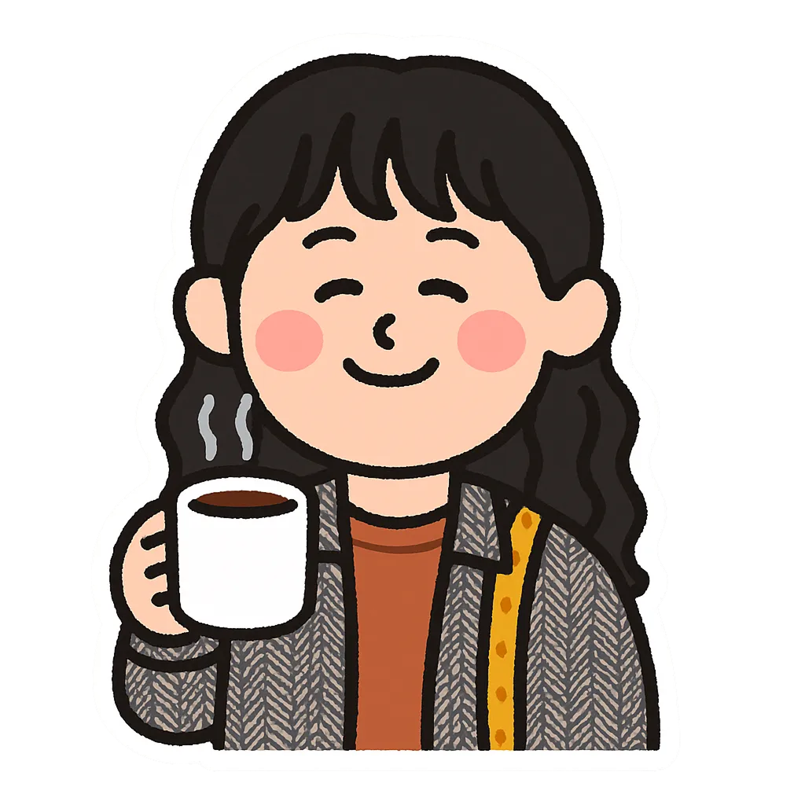

I use research to help teams focus on the right problems — and AI to move from insight to tested solution, faster.
Currently at King (Activision Blizzard), I lead UX strategy across platform and game production. My work starts with structured discovery — running research, building insight repositories teams can access independently, and connecting findings directly to roadmap priorities. Throughout, I use AI to plan studies, synthesize qualitative data, prototype in hours, and implement without traditional design-to-code handoffs.
Previously at Zalando, Telenor, and H&M — each role reinforced the same conviction: the most impactful design work isn't about better interfaces. It's about helping organizations ask better questions and act on the answers.
How I Work
A research-led loop, with AI accelerating every step that doesn't require human judgment.
Throughout, I stay in control: AI handles the mechanical work; I handle the judgment calls.
Featured Work
Selected case studies showing how I define strategic direction, validate decisions with evidence, and scale design impact in complex organizations.
King
Reduced cognitive load and eliminated friction in a complex technical workflow used by 500+ developers — driving adoption from 55% to 93% and cutting feature rollout time from months to days by reframing the design around trust and predictability rather than interface improvements.
View full details →Zalando
Discovery research uncovered that builders' real frustration wasn't navigation — they couldn't predict the outcome of their own actions. Redirecting from surface-level discoverability fixes to workflow transparency and confidence improved adoption across a platform serving 1,800+ builders.
View full details →Telenor
End-to-end journey mapping revealed customers were failing far upstream from where the team assumed — during SIM registration, not the activation screen. Shifting focus to the actual failure point reduced activation failures by ~60%.
View full details →H&M
Research across 12 markets exposed the core tension: a single global template would fail, but fully localized builds weren't scalable. The insight shaped a flexible design system with local configuration points — enabling the program to scale from 50M to 100M members without fragmenting.
View full details →